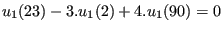
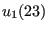
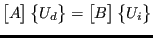

Next: Determining the matrix structure. Up: Determining the matrix structure Previous: Matching the SPC's Contents
Multiple point constraints can depend on each other. For instance:
| (787) |
|  | (788) |
The first equation depends on the second, since  belongs to the independent terms of the first equation, but it is the dependent term in the second (the first term in a MPC is the dependent term and is removed from the global system, the other terms are independent terms). Since the dependent terms are removed, it is necessary to expand (“de-cascade”, since the equations are “cascaded” like falls) the first equation by substituting the second in the first, yielding:
| (789) |
This is done in subroutine cascade.c at least if the MPC's which depend on each other are linear. Then, the corresponding terms are expanded and the MPC's are replaced by their expanded form, if applicable.
However, the expansion is not done if any of the MPC's which depend on each other is nonlinear. For nonlinear MPC's the coefficients of the MPC are not really known at the stage in which cascade.c is called. Indeed, in most cases the coefficients depend on the solution, which is not known yet: an iterative procedure results. Therefore, in a nonlinear MPC terms can vanish during the solution procedure (zero coefficients) thereby changing the dependencies between the MPC's. Thus, the dependencies must be determined in each iteration anew and subroutine cascade.c is called from within the iterative procedure in subroutine nonlingeo.c. This will be discussed later.
In cascade.c there are two procedures to de-cascade the MPC's. The first one (which is the only one productive right now) is heuristic and iteratively expands the MPC's until no dependencies are left. This procedure worked very well thus far, but lacks a theoretical convergence proof. The second procedure, which is assured to work, is based on linear equation solving and uses SPOOLES. The dependent terms are collected on the left hand side, the independent ones on the right hand side and the sets of equations resulting from setting one independent term to 1 and the others to 0 are subsequently solved: the system of equations
|  | (790) |
is solved to yield
| (791) |
in which
 are the dependent terms and
are the dependent terms and
 the independent terms. However, in
practice the MPC's do not heavily depend on each other, and the SPOOLES
procedure has proven to be much slower than the heuristic procedure.
the independent terms. However, in
practice the MPC's do not heavily depend on each other, and the SPOOLES
procedure has proven to be much slower than the heuristic procedure.